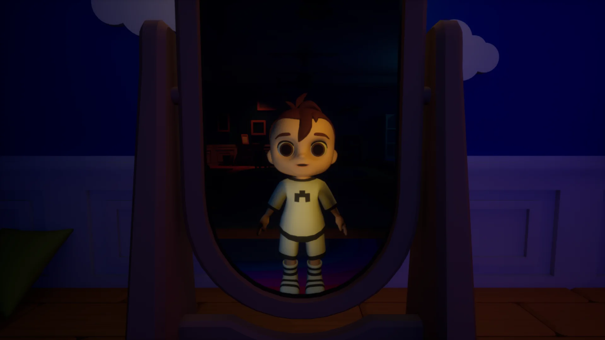
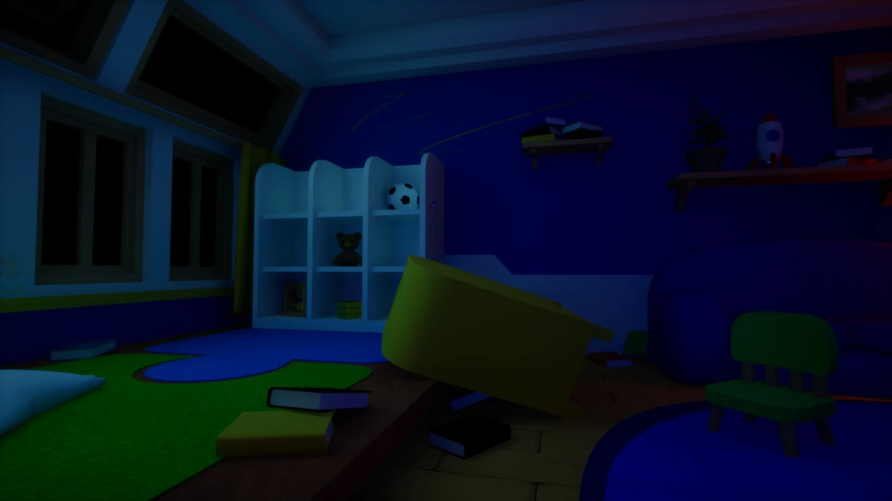

Teddy
Stylized prop / toy

GRADUATION PROJECT / 2026
First-person paranormal horror · Unreal Engine 5
THE EXPERIENCE
ENVIRONMENT
The bedroom is the entire stage of the experience. Lighting and paranormal changes turn one familiar space into something the player must repeatedly re-read.
ROOM TURNAROUND
A continuous look at the environment and its visual language.
3D ASSETS
Selected stylized props from the project. Future updates can add wireframes, UVs, texture sheets and interactive 3D inspection without changing this layout.
Stylized prop / toy
Environment prop / furniture
Stylized prop / toy
GALLERY




NEXT
Planned additions: process work, UI/UX breakdowns, technical implementation, texture sheets, wireframes and interactive 3D assets.
Back to all work ←CONTACT
Contact details and professional profiles will be connected here before launch.